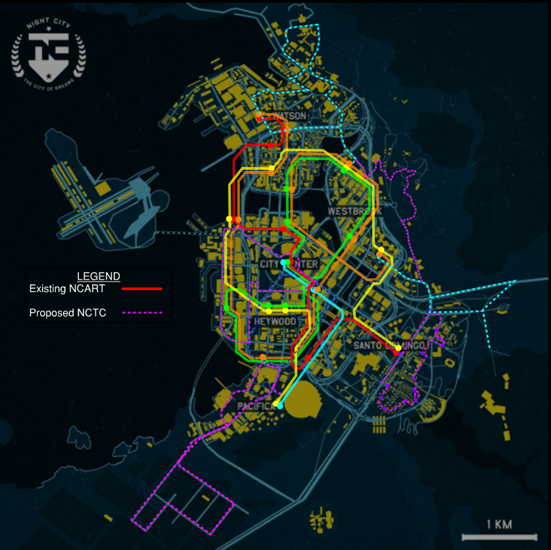
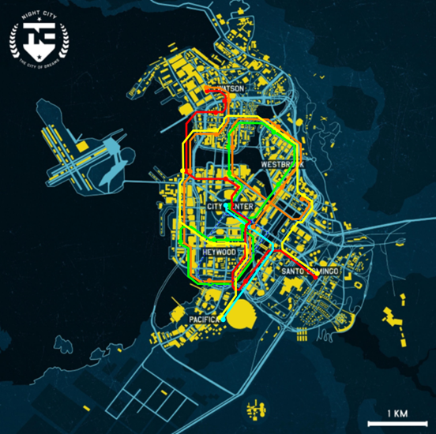

WELCOME
Transit Runners operates seven bus routes across Night City and surrounding districts. Use the controls above to check route statuses, browse schedules, view the route map, and learn how to pay fares.
STATUS BOARD
ROUTE SCHEDULES
SERVICE MAP


FARES AND PAYMENT
ONE-WAY: €$ 0.75 DAY PASS: €$ 3.00 MONTHLY: €$ 45.00
PAYMENT METHODS
• Tripper Card: purchase and reload at Transit Runner Kiosks
• QR Code: purchase ticket on Transit Runner Website
• Cyberware Smart Link: direct Eurodollar transfer
INFORMATION
Student and Senior Discount: €$ 0.25
Daily fares capped at Day Pass rate
FARE EVADERS WILL BE SUBJECT TO ARREST
TRANSIT RUNNERS //
CONNECTING PEOPLE LIKE YOU TO NIGHT CITY